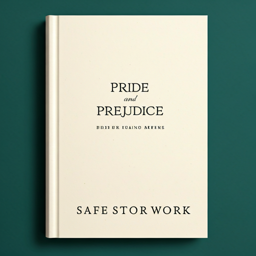

Descubre el placer de leer juntos
Nuestro club de lectura te invita a explorar a nuevos mundos, compartir ideas y conectar con otros amantes de los libros. Cada mes, seleccionamos un libro fascinante para discutir y disfrutar.
Ver el libro del mesLibro del Mes
El Jardín Secreto
Un joven descubre un jardín abandonado que guarda secretos y magia, transformando su vida y la de quienes la rodean.

Próximos Eventos
-
Discusión sobre "El Jardín Secreto"
-
Taller de escritura creativa
-
Noche de juegos de mesa literarios
Libros Leídos Anteriores Meses

El Gran Esteban
F. Scott Fitzgerald

Cien Años de Soledad
Gabriel García Marquez

Orgullo y Prejuicio
Jane Austen